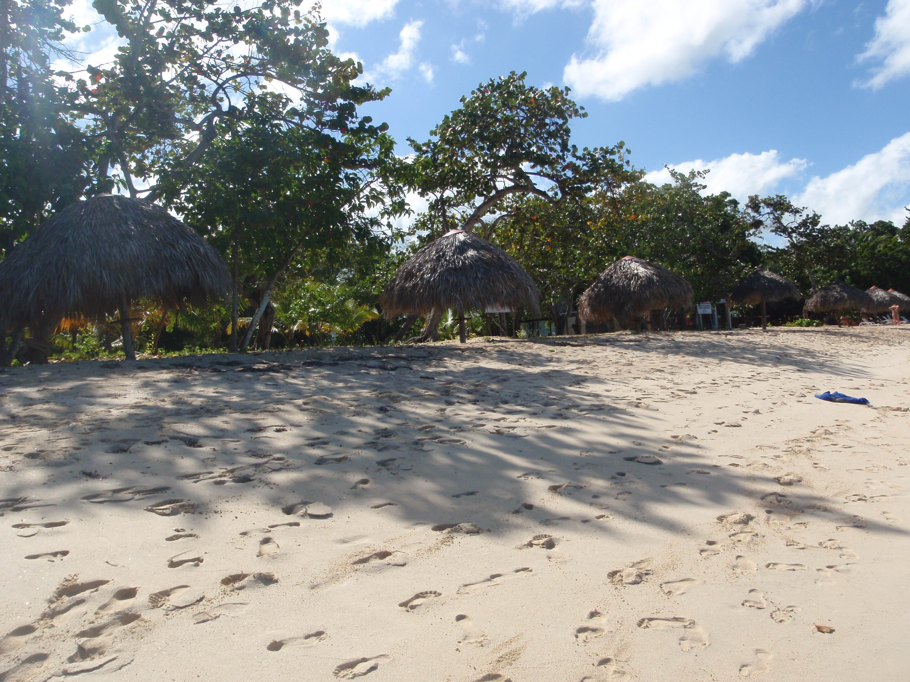
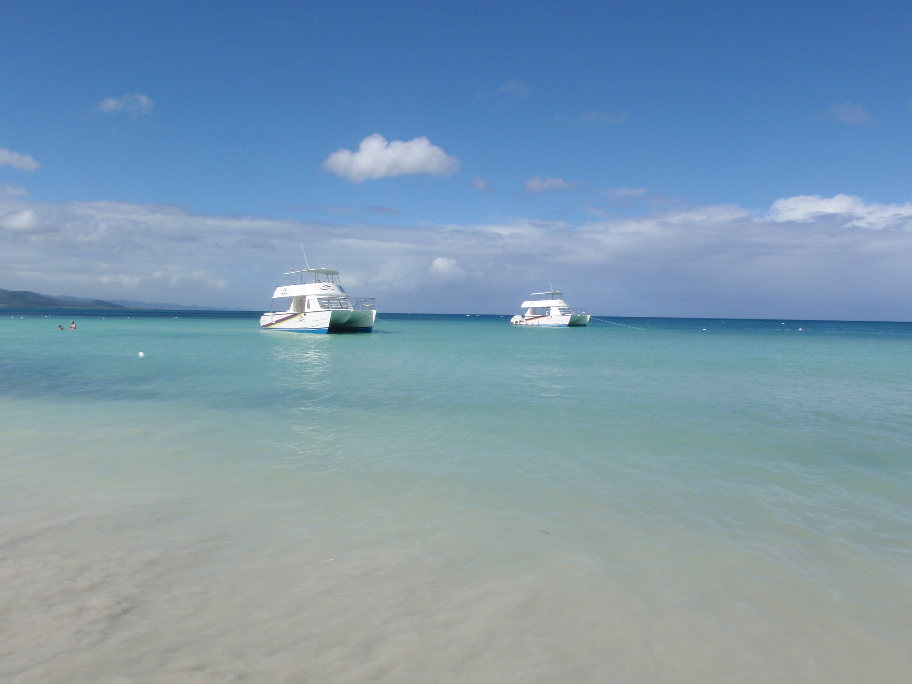
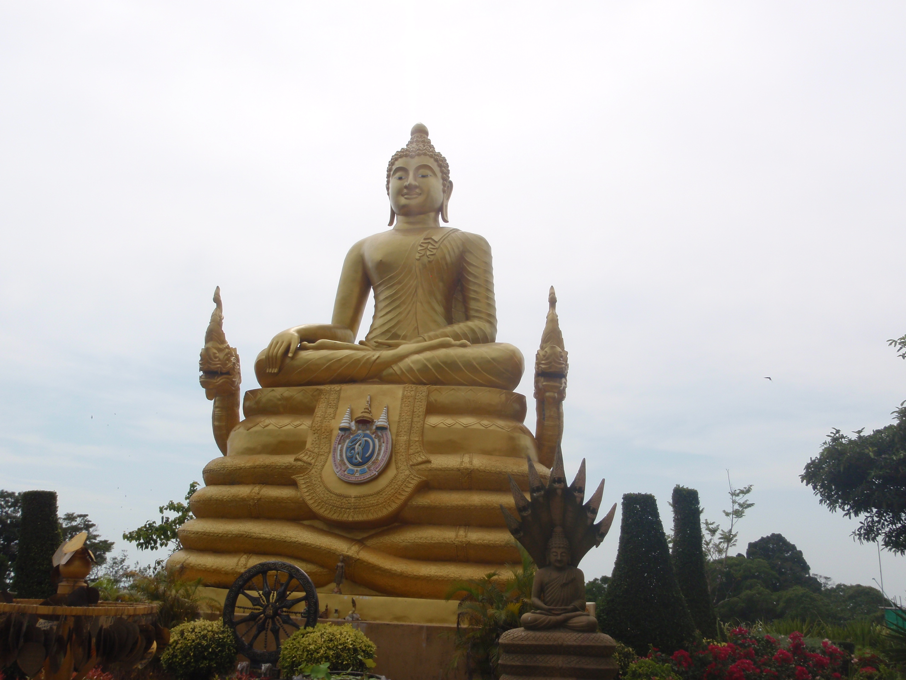
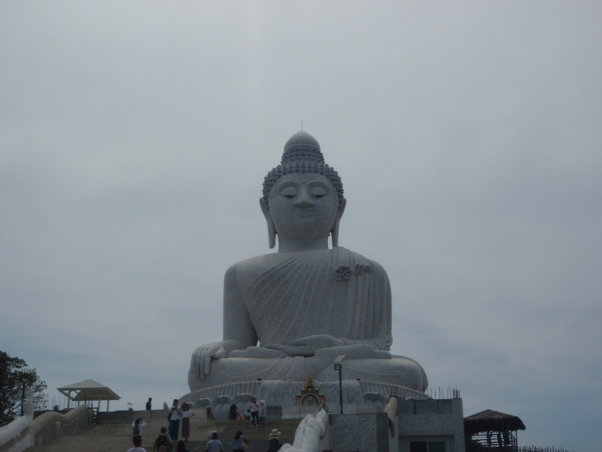
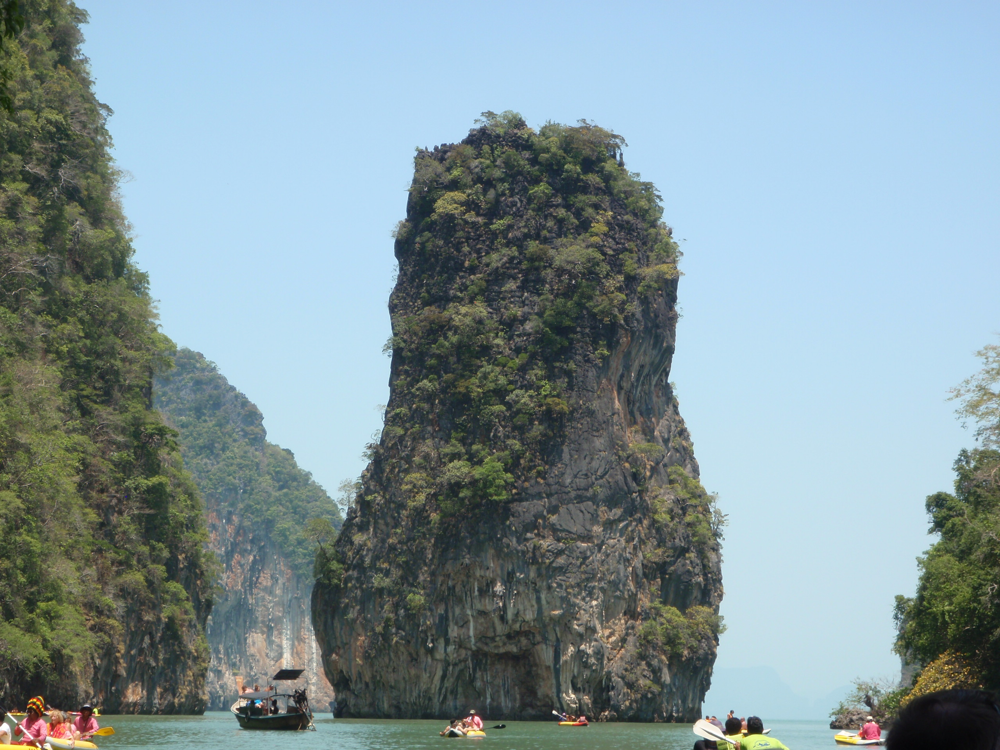
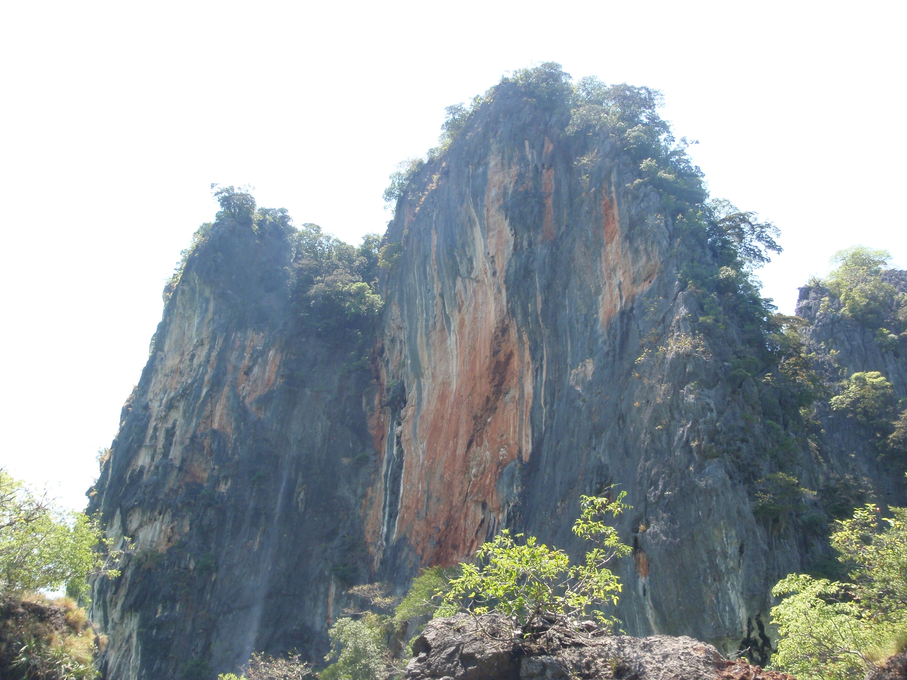

Thaimaassa on erittäin kauniita hiekkarantoja ja puuterimaista hiekkaa niin ne ovat todellakin näkemisen arvoiset. Myös meri on näkemisen arvoinen, koska se on niin kirkas ja sinertävä, että näet jopa pohjaan asti. Eli kannattaa käydä katsomassa
 Big Buddha patsas on todellakin näkemisen arvoinen. Se patsas on niin iso ja kiehtova, että ei siinä voi kuin äimistyä. Patsaan juuressa on myös temppeli minne pääsee tutustumaan. Temppelissä voit saada jopa munkin siunauksen.
 Tällä saarella on kuvattu yksi James Bond elokuvien kohtauksista. Saari on erittäin mielenkiintoinen ja siellä on luola minne pääsee kanootilla vain laskuveden aikaan. Jälkikäteen luolasta aukeaa paikka, jossa on puita ja pieniä apinoita. Tämä paikka on erittäin ihmeellinen
 